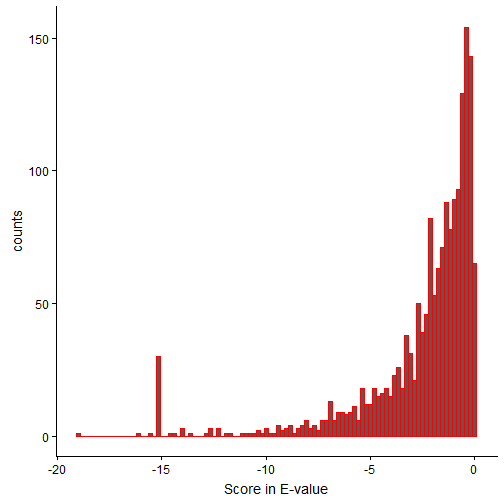
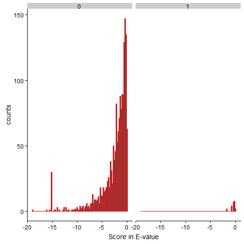
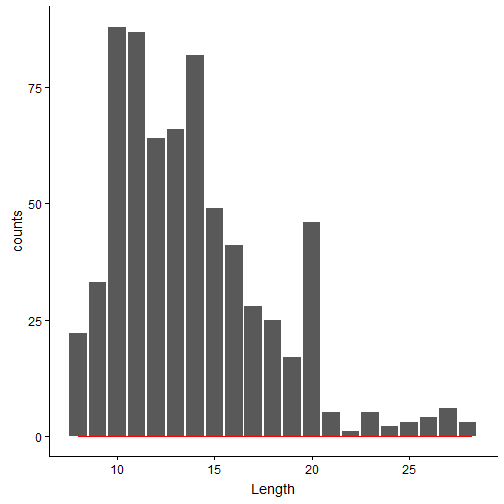
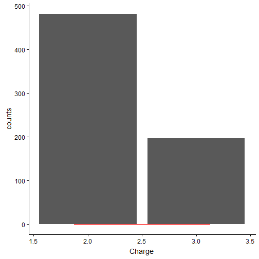

Universe of P[r]oteomics with Tidyverse
Except for writing scripts in R compared to Python, most of the information is similar to previous blog.
I used tidyverse library, which is a combination of R packages that are typically used with data-analysis and visualization. Some of the packages built in tidyverse are dplyr, purr, ggplot, tidyr etc.
# loading all the required packages
rm(list=ls())
# we tidyverse that is universe of all data analysis/visualization related packages
library(tidyverse) # May be the title makes sense now?!
library(cowplot)
Below is the same OMSSA output file that is used in the previous blog.
OMSSA_output <- read.csv("S288c_run.csv", sep=",", header=TRUE)
head(OMSSA_output)
## Spectrum.number Filename.id Peptide E.value Mass gi
## 1 120 index=120 GSIDEQHPR 0.099393924 1037.487 0
## 2 120 index=120 GSIDEQHPR 0.099393924 1037.487 0
## 3 339 index=339 TSGRPIKGDSSAGGK 0.001173798 1416.728 0
## 4 421 index=421 TSGRPIKGDSSAGGK 0.035521953 1416.729 0
## 5 506 index=506 NEETSGEGGEDKNEPSSK 0.028960987 1892.786 0
## 6 514 index=514 ANNSQESNNATSSTSQGTR 0.255100835 1952.833 0
## Accession Start Stop
## 1 BL_ORD_ID:50 250 258
## 2 BL_ORD_ID:131 250 258
## 3 BL_ORD_ID:2647 176 190
## 4 BL_ORD_ID:2647 176 190
## 5 BL_ORD_ID:4527 76 93
## 6 BL_ORD_ID:1296 748 766
## Defline
## 1 sp|P06169|PDC1_YEAST Pyruvate decarboxylase isozyme 1 OS=Saccharomyces cerevisiae (strain ATCC 204508 / S288c) OX=559292 GN=PDC1 PE=1 SV=7
## 2 sp|P26263|PDC6_YEAST Pyruvate decarboxylase isozyme 3 OS=Saccharomyces cerevisiae (strain ATCC 204508 / S288c) OX=559292 GN=PDC6 PE=1 SV=3
## 3 sp|P47075|VTC4_YEAST Vacuolar transporter chaperone 4 OS=Saccharomyces cerevisiae (strain ATCC 204508 / S288c) OX=559292 GN=VTC4 PE=1 SV=2
## 4 sp|P47075|VTC4_YEAST Vacuolar transporter chaperone 4 OS=Saccharomyces cerevisiae (strain ATCC 204508 / S288c) OX=559292 GN=VTC4 PE=1 SV=2
## 5 sp|Q02776|TIM50_YEAST Mitochondrial import inner membrane translocase subunit TIM50 OS=Saccharomyces cerevisiae (strain ATCC 204508 / S288c) OX=559292 GN=TIM50 PE=1 SV=1
## 6 sp|P39001|UME6_YEAST Transcriptional regulatory protein UME6 OS=Saccharomyces cerevisiae (strain ATCC 204508 / S288c) OX=559292 GN=UME6 PE=1 SV=2
## Mods Charge Theo.Mass P.value NIST.score
## 1 2 1037.490 3.803824e-05 0
## 2 2 1037.490 3.803824e-05 0
## 3 3 1416.731 5.359808e-07 0
## 4 2 1416.731 1.624232e-05 0
## 5 3 1892.789 1.991815e-05 0
## 6 2 1952.844 1.608454e-04 0
E,value defines the confidence of the OMSSA hit (i.e., each row that represents the peptide spectral match). The lower the E-value, the better. This is similar to the idea of E-value in BLAST output, if you’re familiar with it.
Below, we change the E-values to log10 scale. So, -20 in the below plot represents 1e-20.
names(OMSSA_output) = gsub("\\.", "", names(OMSSA_output))
Evalplot <- ggplot(OMSSA_output, aes(log10(Evalue))) +
geom_histogram(color ="red", bins = 100) +
stat_count() +
labs(x = "Score in E-value", y = "counts")
Evalplot

From the distribution, it is clear that the peptide spectral matches have varying scores of confidence. For more information on OMSSA scoring, refer to the original paper.
One of the goals I have for this blog, is to repeate the earlier analyses with Jupyter Notebook, but using R Markdown. It helps a bit if you read the earlier blog on Reporting proteomics results with Jupyter Notebook.
I added few columns to the original dataframe to look at other characteristics of the OMSSA hits. Refer to mutate/select functions below to see how the columns can be added, and to select subset of the rows in the dataframe based on a logical condition.
The new 3 columns added are:
- LengthPep = gets the length of peptide using the peptide string
- IsReverse = looks for a string match “###REV###” in Defline and gives a value “1” if true, “0” otherwise
- IsMod = looks for a oxidized MET i.e., lower case M (m) in Peptide and gives a value “1” if true, “0” otherwise
Also, if you notice, the 3 new columns are all related to string parsing i.e., counting letters in peptide, or matching Defline with “###REV###” or matching Mods with “oxidation”!
OMSSA_output = mutate(OMSSA_output, LengthPep = str_count(Peptide))
OMSSA_output = mutate(OMSSA_output, IsReverse = ifelse(grepl("###REV###", Defline), 1, 0))
OMSSA_output = mutate(OMSSA_output, IsMod = ifelse(grepl("oxidation", Mods), 1, 0))
Updated OMSSA output after addition of “LengthPep”, “IsReverse” and “IsMod” columns. Scroll to the right of the table to find these new columns! Note the use of “mutate” in adding columns in R.
head(OMSSA_output)
## Spectrumnumber Filenameid Peptide Evalue Mass gi
## 1 120 index=120 GSIDEQHPR 0.099393924 1037.487 0
## 2 120 index=120 GSIDEQHPR 0.099393924 1037.487 0
## 3 339 index=339 TSGRPIKGDSSAGGK 0.001173798 1416.728 0
## 4 421 index=421 TSGRPIKGDSSAGGK 0.035521953 1416.729 0
## 5 506 index=506 NEETSGEGGEDKNEPSSK 0.028960987 1892.786 0
## 6 514 index=514 ANNSQESNNATSSTSQGTR 0.255100835 1952.833 0
## Accession Start Stop
## 1 BL_ORD_ID:50 250 258
## 2 BL_ORD_ID:131 250 258
## 3 BL_ORD_ID:2647 176 190
## 4 BL_ORD_ID:2647 176 190
## 5 BL_ORD_ID:4527 76 93
## 6 BL_ORD_ID:1296 748 766
## Defline
## 1 sp|P06169|PDC1_YEAST Pyruvate decarboxylase isozyme 1 OS=Saccharomyces cerevisiae (strain ATCC 204508 / S288c) OX=559292 GN=PDC1 PE=1 SV=7
## 2 sp|P26263|PDC6_YEAST Pyruvate decarboxylase isozyme 3 OS=Saccharomyces cerevisiae (strain ATCC 204508 / S288c) OX=559292 GN=PDC6 PE=1 SV=3
## 3 sp|P47075|VTC4_YEAST Vacuolar transporter chaperone 4 OS=Saccharomyces cerevisiae (strain ATCC 204508 / S288c) OX=559292 GN=VTC4 PE=1 SV=2
## 4 sp|P47075|VTC4_YEAST Vacuolar transporter chaperone 4 OS=Saccharomyces cerevisiae (strain ATCC 204508 / S288c) OX=559292 GN=VTC4 PE=1 SV=2
## 5 sp|Q02776|TIM50_YEAST Mitochondrial import inner membrane translocase subunit TIM50 OS=Saccharomyces cerevisiae (strain ATCC 204508 / S288c) OX=559292 GN=TIM50 PE=1 SV=1
## 6 sp|P39001|UME6_YEAST Transcriptional regulatory protein UME6 OS=Saccharomyces cerevisiae (strain ATCC 204508 / S288c) OX=559292 GN=UME6 PE=1 SV=2
## Mods Charge TheoMass Pvalue NISTscore LengthPep IsReverse IsMod
## 1 2 1037.490 3.803824e-05 0 9 0 0
## 2 2 1037.490 3.803824e-05 0 9 0 0
## 3 3 1416.731 5.359808e-07 0 15 0 0
## 4 2 1416.731 1.624232e-05 0 15 0 0
## 5 3 1892.789 1.991815e-05 0 18 0 0
## 6 2 1952.844 1.608454e-04 0 19 0 0
Let’s take a look at the OMSSA hits with and without Reverse matches
EvalplotRev <- ggplot(OMSSA_output, aes(log10(Evalue))) +
facet_wrap(.~IsReverse) +
geom_histogram(color ="red", bins = 100) +
stat_count() +
labs(x = "Score in E-value", y = "counts")
EvalplotRev

The right subplot (titled 1, which means IsReverse=True) seems to have scores between greater than 1e-2. Please note that we used log10 in E-value scores and mentioned that lower E-value the better. (1e-20 is better than 1e-5, for example)
As noted in the previous article, there are better methods to estimate the false discovery rates, and here my goal is to use simple techniques, and at the same time produce efficient results. Another FDR technique that is not mentioned in my earlier blog is two-dimensional target decoy strategy for decoy searches. This technique “protein-aware FDR”, also called peptide 2D FDR gives bonus for PSMs from proteins almost sure to be true, as quoted in this Thermo application note.
Since we know the reverse hits fall between 0 and 1e-2, we can use the same logic that some of the forward matches to the databases (i.e., first subplot) might have hits that are not genuine in the bin of [0,1e-2]. We can safely remove this bin for further analyses. Since the end goal of the blog is to introduce OMSSA search results with R tidyverse, an underestimate of true hits (by strict criteria of removing the entire bin) is fine.
filtered_OMSSA_output = filter(OMSSA_output, Evalue < 1e-2)
head(filtered_OMSSA_output)
## Spectrumnumber Filenameid Peptide Evalue
## 1 339 index=339 TSGRPIKGDSSAGGK 1.173798e-03
## 2 549 index=549 SRGESDDSLNR 1.937602e-03
## 3 549 index=549 SRGESDDSLNR 1.937602e-03
## 4 583 index=583 ANSDCNDKTDCNANNDCSNESDCNAK 9.257848e-04
## 5 632 index=632 TKTHDVGDEGGNESTKPK 1.004113e-10
## 6 648 index=648 SSDDNNANHPEHQYTKPTRK 2.219034e-03
## Mass gi Accession Start Stop
## 1 1416.728 0 BL_ORD_ID:2647 176 190
## 2 1234.551 0 BL_ORD_ID:877 61 71
## 3 1234.551 0 BL_ORD_ID:900 61 71
## 4 2992.052 0 BL_ORD_ID:3714 581 606
## 5 1898.900 0 BL_ORD_ID:6470 645 662
## 6 2338.064 0 BL_ORD_ID:856 958 977
## Defline
## 1 sp|P47075|VTC4_YEAST Vacuolar transporter chaperone 4 OS=Saccharomyces cerevisiae (strain ATCC 204508 / S288c) OX=559292 GN=VTC4 PE=1 SV=2
## 2 sp|Q3E754|RS21B_YEAST 40S ribosomal protein S21-B OS=Saccharomyces cerevisiae (strain ATCC 204508 / S288c) OX=559292 GN=RPS21B PE=1 SV=1
## 3 sp|P0C0V8|RS21A_YEAST 40S ribosomal protein S21-A OS=Saccharomyces cerevisiae (strain ATCC 204508 / S288c) OX=559292 GN=RPS21A PE=1 SV=1
## 4 sp|Q08732|HRK1_YEAST Serine/threonine-protein kinase HRK1 OS=Saccharomyces cerevisiae (strain ATCC 204508 / S288c) OX=559292 GN=HRK1 PE=1 SV=1
## 5 sp|P47116|PTK2_YEAST Serine/threonine-protein kinase PTK2/STK2 OS=Saccharomyces cerevisiae (strain ATCC 204508 / S288c) OX=559292 GN=PTK2 PE=1 SV=1
## 6 sp|Q12038|SRO7_YEAST Lethal(2) giant larvae protein homolog SRO7 OS=Saccharomyces cerevisiae (strain ATCC 204508 / S288c) OX=559292 GN=SRO7 PE=1 SV=1
## Mods Charge TheoMass Pvalue NISTscore LengthPep IsReverse IsMod
## 1 3 1416.731 5.359808e-07 0 15 0 0
## 2 2 1234.554 8.562092e-07 0 11 0 0
## 3 2 1234.554 8.562092e-07 0 11 0 0
## 4 3 2992.055 9.848775e-07 0 26 0 0
## 5 3 1898.898 6.291435e-14 0 18 0 0
## 6 3 2338.071 1.844584e-06 0 20 0 0
Of the filtered results, we can further filter out the oxidation cases:
oxidations_only = filter(filtered_OMSSA_output, IsMod>0)
head(oxidations_only)
## Spectrumnumber Filenameid Peptide Evalue Mass gi
## 1 729 index=729 SKQEASQmAAmAEK 3.606349e-03 1540.685 0
## 2 1005 index=1005 YATmTGHHVER 6.635733e-03 1316.593 0
## 3 2909 index=2909 SKQEASQmAAMAEK 3.483283e-07 1524.693 0
## 4 2909 index=2909 SKQEASQMAAmAEK 6.834636e-03 1524.693 0
## 5 4663 index=4663 TGTLTTSETAHNmK 1.544400e-05 1506.695 0
## 6 6357 index=6357 mGHSGAIVEGSGTDAESKK 1.819108e-03 1875.860 0
## Accession Start Stop
## 1 BL_ORD_ID:6013 655 668
## 2 BL_ORD_ID:4636 70 80
## 3 BL_ORD_ID:6013 655 668
## 4 BL_ORD_ID:6013 655 668
## 5 BL_ORD_ID:5833 466 479
## 6 BL_ORD_ID:6570 282 300
## Defline
## 1 sp|P32589|HSP7F_YEAST Heat shock protein homolog SSE1 OS=Saccharomyces cerevisiae (strain ATCC 204508 / S288c) OX=559292 GN=SSE1 PE=1 SV=4
## 2 sp|P09436|SYIC_YEAST Isoleucine--tRNA ligase, cytoplasmic OS=Saccharomyces cerevisiae (strain ATCC 204508 / S288c) OX=559292 GN=ILS1 PE=1 SV=1
## 3 sp|P32589|HSP7F_YEAST Heat shock protein homolog SSE1 OS=Saccharomyces cerevisiae (strain ATCC 204508 / S288c) OX=559292 GN=SSE1 PE=1 SV=4
## 4 sp|P32589|HSP7F_YEAST Heat shock protein homolog SSE1 OS=Saccharomyces cerevisiae (strain ATCC 204508 / S288c) OX=559292 GN=SSE1 PE=1 SV=4
## 5 sp|P32324|EF2_YEAST Elongation factor 2 OS=Saccharomyces cerevisiae (strain ATCC 204508 / S288c) OX=559292 GN=EFT1 PE=1 SV=1
## 6 sp|P53598|SUCA_YEAST Succinate--CoA ligase [ADP-forming] subunit alpha, mitochondrial OS=Saccharomyces cerevisiae (strain ATCC 204508 / S288c) OX=559292 GN=LSC1 PE=1 SV=1
## Mods Charge TheoMass Pvalue
## 1 oxidation of M:8 ,oxidation of M:11 2 1540.687 2.128896e-06
## 2 oxidation of M:4 2 1316.593 3.218105e-06
## 3 oxidation of M:8 2 1524.692 1.949235e-10
## 4 oxidation of M:11 2 1524.692 3.824642e-06
## 5 oxidation of M:13 3 1506.700 8.014532e-09
## 6 oxidation of M:1 3 1875.862 1.202319e-06
## NISTscore LengthPep IsReverse IsMod
## 1 0 14 0 1
## 2 0 11 0 1
## 3 0 14 0 1
## 4 0 14 0 1
## 5 0 14 0 1
## 6 0 19 0 1
If you look at the first peptide “SKQEASQmAAmAEK”, you can see 2 lowercase M (i.e., -mAAm-) and if you scroll the table to the right and look at the “Mods” column, you can notice “oxidation of M:8 ,oxidation of M:11”.
Similar to the previous Jupyter Notebook, we can plot the distributions of Length and Charge.
LengthPepplot <- ggplot(filtered_OMSSA_output, aes(LengthPep)) +
geom_histogram(color = "red", bins = 100) +
stat_count() +
labs(x = "Length", y = "counts")
LengthPepplot

Most of the peptides seem to have length between 9-20 amino acids. Generally, the longer the peptides, the mass-spec detects the peptide with higher charge state. Below is the charge distribution of the true OMSSA matches.
Chargeplot <- ggplot(filtered_OMSSA_output, aes(Charge)) +
geom_histogram(color = "red", bins = 5) +
stat_count() +
labs(x = "Length", y = "counts")
Chargeplot

Additionally we can use facet_wrap to look at length distributions for 2+ / 3+ charges separately. If you look carefully, facet_wrap has the argument Charge, while ggplot has aes of LengthPep, which means that the ggplot function plots the distribution of LengthPep, for each Charge.
LengthPepChargeplot <- ggplot(filtered_OMSSA_output, aes(LengthPep)) +
facet_wrap(.~Charge) +
geom_histogram(color = "red", bins = 100) +
stat_count() +
labs(x = "Length", y = "counts")
LengthPepChargeplot

Couple of conclusions can be made from the above Length/Charge subplots:
- 2+ charge state peptides have more matches, compared to 3+. This is true, in general for most of the CID/HCD datasets.
- It seems that 3+ charge state results in longer peptides, when compared to 2+ charge state peptides.
For any proteomics experiment, the end goal is to identify or quantify the proteins and the post-translational modifications. In this blog, I cannot go through all the details, however I can quickly identify which protein has the most number of hits. If you read my earlier blog, you will see that the dataset used is a truncated version of one of the open-source datasets.
In the earlier blog, with jupyter notebook, I did the following steps:
- grouping the above results by protein (Accession or Defline)
- count unique peptides and sort
- report the top few abundant protein hits.
Here, I take a more simpler approach of “total peptide spectral matches”” per Defline in OMSSA search
protein_list = filtered_OMSSA_output %>% group_by(Defline) %>% summarise(count = n())
protein_list_sorted = protein_list[with(protein_list, order(-count)), ]
head(protein_list_sorted)
## # A tibble: 6 x 2
## Defline count
## <fct> <int>
## 1 sp|P00950|PMG1_YEAST Phosphoglycerate mutase 1 OS=Saccharomyces ce~ 17
## 2 sp|P31539|HS104_YEAST Heat shock protein 104 OS=Saccharomyces cere~ 9
## 3 sp|P39960|BEM2_YEAST GTPase-activating protein BEM2/IPL2 OS=Saccha~ 7
## 4 sp|P00445|SODC_YEAST Superoxide dismutase [Cu-Zn] OS=Saccharomyces~ 6
## 5 sp|P06634|DED1_YEAST ATP-dependent RNA helicase DED1 OS=Saccharomy~ 5
## 6 sp|P17076|RL8A_YEAST 60S ribosomal protein L8-A OS=Saccharomyces c~ 5
From above, it PMG1_YEAST seem to have a total of 17 peptide spectral matches. In the previous blog, I did report the same protein i.e., PMG1 as abundant, based on count on the unique peptides.
Here is the direct access to the R Markdown used for this blog.